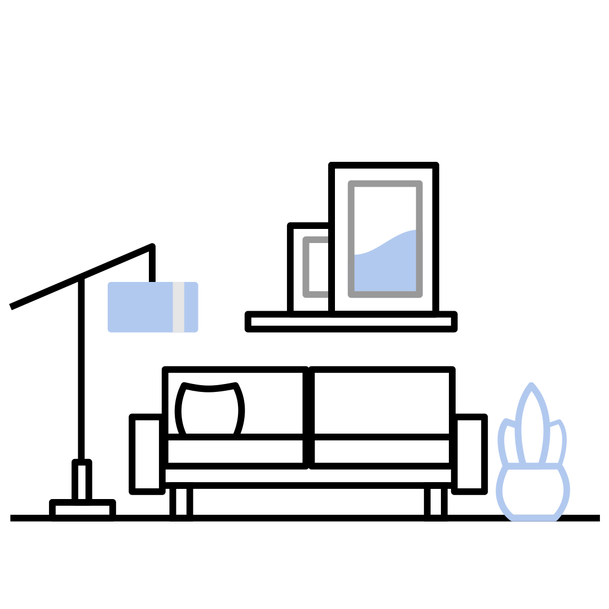

What is 'filling the gap'?
It isn’t just about “last mile” commuting – bike sharing expands your metro area perimeter, and fills in the service gaps that mass transit hasn’t been able to serve.
COMMENT